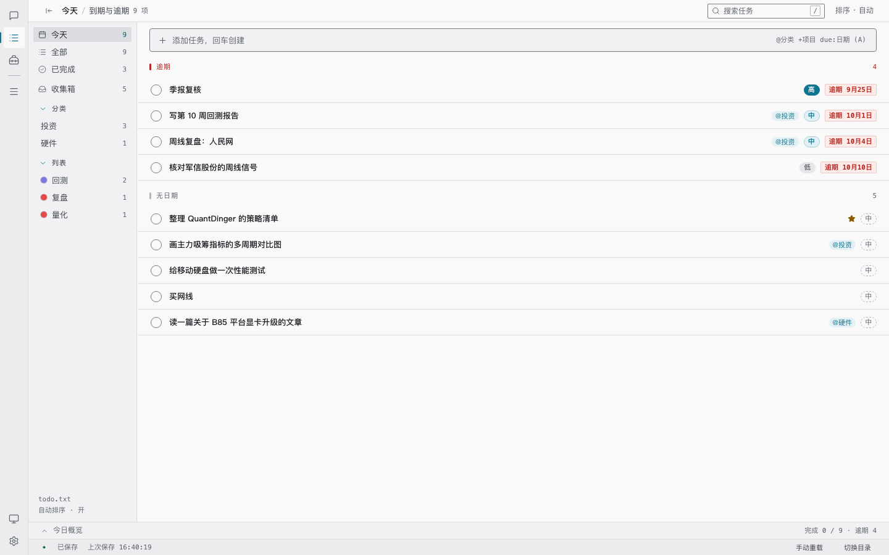
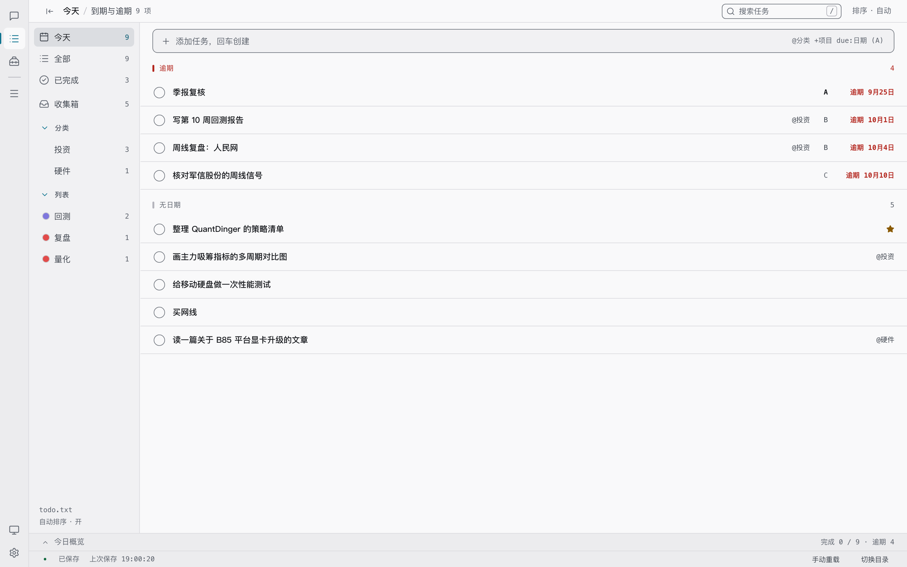
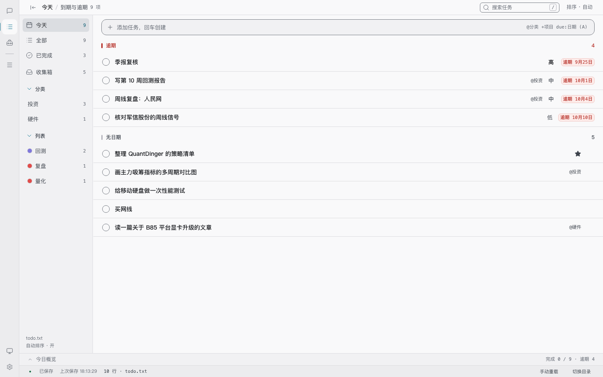

UI 全量重做：工作登记簿
从 v1.3.0 干净基线重新做完的一版。不是局部打磨：全部界面、明暗两套主题、工具子页与窄屏一起改，最后用项目自己的八道门禁和真实浏览器渲染逐项核对。
- 基线
- v1.3.0
- 范围
- 14 视图 × 明暗 + 5 工具子页 + 30 档响应式
- 验证
- 651 用例 / 94 组对比度 / 358 项几何断言
- 结论
- 全绿，可直接构建使用
中重度 slop，不是 polish
重看全部界面后的结论：问题散布在颜色、字型、图标、文案、布局与动效六层，不能靠"修几处"了结。上一轮把范围收在列表页，这一轮从干净基线重跑完整九遍 pass。
- 彩色药丸编码优先级
- 无优先级画成「中」
- uppercase + 宽字距小标签
- 图标 11 / 13 / 15 / 17 / 26 混用
- 卡片彩色左缘 + 悬浮位移
- 引导页居中堆叠、没有产品预览
- height / width 过渡与弹跳缩放
三条红线未动：纯文本 todo.txt 仍是唯一数据源；外部编辑器只检测不上锁；外观偏好留在 configStore、不写进数据文件。被门禁锁死的颜色值与侧栏宽度也不硬改，而是重排它们的用法。
五句定调，改完不再换方向
- Product
- 把任务写进本机纯文本 todo.txt 的桌面清单，给用 grep / git / 编辑器管自己文件的人。
- Character
- 可核对、安静、有刻度。
- World
- 摊开的工作登记簿 —— 一行一条、右列对齐的读数、页脚合计、冷灰纸面，青墨是唯一标记色。
- Moments
- 任务表这一页；以及一句话落成「文件里的一行」那条带行号的源文本行。
- Signature
07 │ (A) 交周报 @工作 +回测 due:…—— 行号 + 源文本行，每条任务都能回溯到文件里的一行。抄录文件原文只发生在「写入行 / 纸页 / 语法提示」；界面读数用中文分级，见 09。
每一遍都走完全部界面
| Pass | 改动 |
|---|---|
| 1 Spacing | 4px 网格；导航行 32、任务行 44、控件 28 / 32；侧栏组名贴近自己的条目；卡片内距统一 16；概览与状态栏同为 28。 |
| 2 Color | 一套中性阶梯 + 三档文字角色；accent 只表选中 / 今天到期 / 焦点，逾期是整行唯一强色；优先级、分类、日期的彩色药丸与卡片彩色左缘全部撤掉。 |
| 3 Icons | 全仓尺寸收敛到 12 / 16 / 24，描边统一 1.5；删掉预留卡的「＋」、标签里的「★」；图标不再自带颜色，星标靠实心/空心区分。 |
| 4 Copy | 引导页从「3 步 + 点下面的蓝色按钮」改成事实陈述；空态「今天没有待办」；对话占位文字缩短；「预留模块，登记后自动出现」改「还有位置留给新工具」；无感叹号、无不可验证的说法。 |
| 5 Type | 正文回到 14 / 16 / 20 / 32，display 族回正文；去掉 uppercase、宽字距、斜体；标题与卡名 600 → 500；读数统一 tabular-nums。 |
| 6 Layout | 引导页居中堆叠改非对称分栏，右半是一整页 todo.txt；工具卡去掉 translateY 与阴影；概览与侧栏不再动画布局属性。 |
| 7 Details | 优先级界面读「高 / 中 / 低」三档、悬停可核对 (A)/(B)/(C)，无优先级留空；快捷键做成键帽；指标卡去卡框只留一根发丝线；圆角 4 / 6 / 8 / 12 / 16 五档嵌套。 |
| 8 Visuals | 唯一有材质的一屏：引导页右侧 8 行源文本、行号槽、发丝线、一行青墨高亮；没有插图、渐变、发光或玻璃拟态。 |
| 9 Motion | 一条缓动曲线、三档时长；删除 height / width 过渡、0.82 弹跳缩放改为 0.97，去掉无限呼吸与彩色动效。 |
「行号 + 源文本行」落在五个地方
| 位置 | 落点 |
|---|---|
| 引导页 | 右侧摊开一页 todo.txt，8 行原文与行号，高亮行对应界面里的一条任务。 |
| 快速添加 | data-line 按现有行数算出下一行行号，chips 里的标签用 due: / t: / star: 原文写法。 |
| 编辑抽屉 | 底部「写入行」改成行号槽 + 竖线 + serializeTask() 的原文，保存前就能核对会写进文件什么。 |
| 状态栏 | 页脚合计 N 行 · todo.txt，等宽读数，与文件行数同一把尺子。 |
| 对话页 | 任务快照保留行号，优先级与列表行一样读中文急慢分级，字重分三档。 |
同一个列表页：基线 / 被否定的上一版 / 最终版



基线 → 最终版：其余视图逐张对照
另有重授权页、不支持页、空状态、编辑抽屉、toast、冲突弹窗、工具子页与 390px 窄屏，同样在明暗两套下逐张渲染复查；截图见 /tmp/unslop/final5/ 与本目录 assets。
八道门禁，全绿
| 命令 | 结果 |
|---|---|
| npm test | 34 / 34 测试文件、655 / 655 用例通过 |
| test:ui | 类名契约无缺失、无裸色值 / 裸字号；94 组 WCAG 对比度全过；40 文件 Hook 规则通过 |
| test:guard | 磁盘上 34 个测试文件全部真的跑到 |
| test:nl | 中文指令覆盖 44 / 44；174 条触发词无漂移 |
| test:settings | 15 / 15 通过 |
| test:tools | 74 / 74 通过 |
| test:responsive | 30 档 / 358 项几何断言，失败 0 |
| npm run build | vite build 通过，产物 321.13 kB JS / 80.78 kB CSS |
顺带补了两处落后于功能的断言：设置页新增「列表外观」分组后，qa-settings.mjs 的分组清单与「只读」页头说明一并校准；QuickAdd.test.jsx 同步到 due: / star: 的原文标签。优先级口径定稿后又补了 4 条用例：TaskRow.test.jsx 的渲染契约（中文分级 / 不出现 (A) 显示文本 / 空槽），以及 QuickAdd.test.jsx 的三档映射。
相较被否定的上一版，主要调整点
- 方向 从「纸与终端 / 等宽只归读数」的局部打磨，换成「工作登记簿 / 行号 + 源文本行」的完整重做；上一版的结论与内容一概不沿用。
- 范围 上一版只动列表页与几个组件；这一版覆盖 14 个视图、明暗两套、5 个工具子页、引导/重授权/不支持页、浮层与窄屏。
- 判定 上一版判为「light slop → polish」；这一版重判「中重度 slop」，跑完整九遍 pass，而不是挑几处修。
- 基线 上一版的 src 改动整体 stash 封存、说明页与截图移出仓库，回到 v1.3.0 干净基线从头做。
- 签名 新增引导页 todo.txt 纸页、快速添加行号、编辑抽屉写入行、状态栏行数、设置页键帽；签名出现在五处而不是只贴在某个标签上。
- 记号 上一版用 A/B/C 字母配字重编码；这一版按语境分家：界面读数用中文急慢分级，文件原文只留在写入行 / 纸页 / 语法提示，无优先级留空，星标 chip 写
star:1（详见 09）。 - 引导页 上一版仍是居中堆叠；这一版改成非对称分栏，右半是 8 行真实语法的 todo.txt 预览，并在 390px 下按阅读顺序堆叠。
- 门禁 跑通全部八道验证，并修正两条早于本轮、但一直没跟上的断言与一条单测。
优先级：界面读得懂，文件对得上
初版把任务行的优先级直接抄成 (A)/(B)/(C)。用户反馈：括号字母看不出急慢，「高 / 中 / 低」才读得懂。据此把两类语境拆开，而不是二选一。
| 语境 | 显示 | 理由 |
|---|---|---|
| 任务行 / 对话快照 | 高 / 中 / 低，字重 600 / 500 / 400，中性色 | 扫视时要一眼分出急慢；颜色仍只编码状态，逾期保留唯一强色 |
| 快速添加 chip | 高 (A) | 既说明输入被解析成什么，又能和文件记号对上；与编辑抽屉的优先级选择器同口径 |
| 编辑抽屉「写入行」/ 引导页纸页 / 输入语法提示 | (A) 交周报 … | 这里展示的是真正会写进 todo.txt 的文本，改成中文会误导 |
| 悬停 title / 选择器 / 右键菜单 | 优先级：高 · todo.txt 写作 (A) | 把两套记号接起来，随时能核对 |
| 无优先级 | 留空槽 | 没填不是「中」，不该被画成一个值 |
引导页纸页下方新增一行对照 (A) 高 (B) 中 (C) 低，右注「左为文件写法 · 右为急慢分级」；390px 窄屏下说明单独换行。另外把分级文字从 --muted + 11px 提到 --text-2 + 12 / 13px —— 淡到看不见的分级等于没有分级。全部截图已按定稿重渲染。